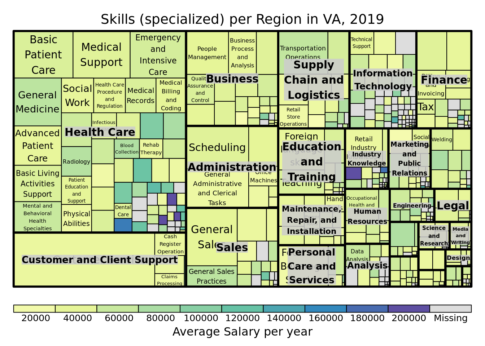
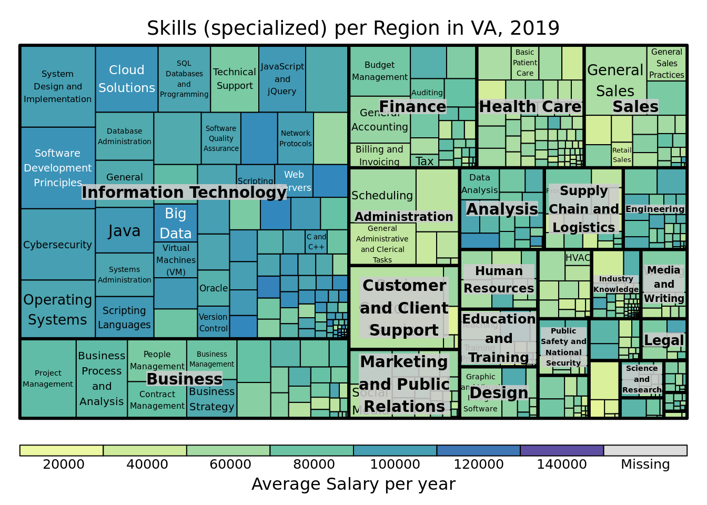

libraries
library(dplyr)##
## Attaching package: 'dplyr'## The following objects are masked from 'package:stats':
##
## filter, lag## The following objects are masked from 'package:base':
##
## intersect, setdiff, setequal, unioncon <- RPostgreSQL::dbConnect(drv = RPostgreSQL::PostgreSQL(),
dbname = "sdad",
host = "postgis1",
port = 5432,
user = Sys.getenv(x = "DB_USR"),
password = Sys.getenv(x = "DB_PWD"))
skills_va <- RPostgreSQL::dbGetQuery( conn = con,
statement = "SELECT *
FROM bgt_job.skills_va
")
cat_skills <- read.csv( "/home/cpm9w/test_symlink/skills/categories_scf_sc_skills.csv")
job_skills_va <- read.csv("~/STW/BGT/va_go_regions/va_go_bgt/job_skills_va_region.csv")
# never opens this: FROM bgt_job.skillAdd skillcluster family
#
skills_va <- skills_va %>% left_join(cat_skills %>% select(skill, skillclusterfamily), by= "skill")join skills with jobs
job_skill_list_va <- left_join(job_skills_va, skills_va, by= "id")
length(unique(job_skills_va$id))## [1] 1015047length(unique(job_skill_list_va$id))## [1] 1015047library(readr)
#write_csv(job_skill_list_va, "~/STW/BGT/va_go_regions/va_go_bgt/job_skill_list_va.csv")
#write for app
#write_csv(job_skill_list_va, "~/STW/BGT/va_go_regions/va_go_bgt/job_skill_list_va.csv")
#open
job_skill_list_va <- read.csv("~/STW/BGT/va_go_regions/va_go_bgt/job_skill_list_va.csv")density of skills by region
library(tidyverse)## ── Attaching packages ─────────────────────────────────────── tidyverse 1.3.1 ──## ✓ ggplot2 3.3.5 ✓ purrr 0.3.4
## ✓ tibble 3.1.6 ✓ stringr 1.4.0
## ✓ tidyr 1.2.0 ✓ forcats 0.5.1## ── Conflicts ────────────────────────────────────────── tidyverse_conflicts() ──
## x dplyr::filter() masks stats::filter()
## x dplyr::lag() masks stats::lag()library(treemap)
library(rgeos)## Loading required package: sp## rgeos version: 0.5-5, (SVN revision 640)
## GEOS runtime version: 3.6.2-CAPI-1.10.2
## Linking to sp version: 1.4-5
## Polygon checking: TRUElibrary(sf)## Linking to GEOS 3.6.2, GDAL 2.2.3, PROJ 4.9.3; sf_use_s2() is TRUElibrary(shiny)
library(shinythemes)
library(leaflet)
library(DT)##
## Attaching package: 'DT'## The following objects are masked from 'package:shiny':
##
## dataTableOutput, renderDataTablelibrary(scales)##
## Attaching package: 'scales'## The following object is masked from 'package:purrr':
##
## discard## The following object is masked from 'package:readr':
##
## col_factorlibrary(htmltools)
library(dplyr)
library(shiny)
library(devtools)## Loading required package: usethislibrary(readr)
library(collapsibleTree)
library(treemap)
library(stringr)
library(viridis)## Loading required package: viridisLite##
## Attaching package: 'viridis'## The following object is masked from 'package:scales':
##
## viridis_pallibrary(hrbrthemes)## NOTE: Either Arial Narrow or Roboto Condensed fonts are required to use these themes.## Please use hrbrthemes::import_roboto_condensed() to install Roboto Condensed and## if Arial Narrow is not on your system, please see https://bit.ly/arialnarrowlibrary(d3treeR)
library(ggridges)
library(ggplot2)
library(d3Tree)##
## Attaching package: 'd3Tree'## The following objects are masked from 'package:d3treeR':
##
## d3tree, d3treeOutput, renderD3treelibrary(stringr)
library(viridisLite)
library(htmlwidgets)
library(grid)
library(gridSVG)##
## Attaching package: 'gridSVG'## The following objects are masked from 'package:grid':
##
## linearGradient, pattern, radialGradient## The following object is masked from 'package:grDevices':
##
## dev.offlibrary(lattice)
library(gridSVG)
job_skill_list_va$num <- 1
R1 <- treemap(job_skill_list_va %>% dplyr::filter(va_region == 1) ,
index=c("skillclusterfamily", "skillcluster"),
vSize="num",
vColor="minsalary",
type="value",
fun.aggregate = 'mean',
palette = "Spectral",
overlap.labels =1,
title="Skills (specialized) per Region in VA, 2019",
title.legend = "Average Salary per year",
na.rm = TRUE )
d3tree2( R1 , rootname = "Skills" )
R7 <- treemap(job_skill_list_va %>% dplyr::filter(va_region == 7) ,
index=c("skillclusterfamily", "skillcluster"),
vSize="num",
vColor="minsalary",
type="value",
fun.aggregate = 'mean',
palette = "Spectral",
overlap.labels =1,
title="Skills (specialized) per Region in VA, 2019",
title.legend = "Average Salary per year",
na.rm = TRUE )
d3tree2( R7 , rootname = "Skills" )